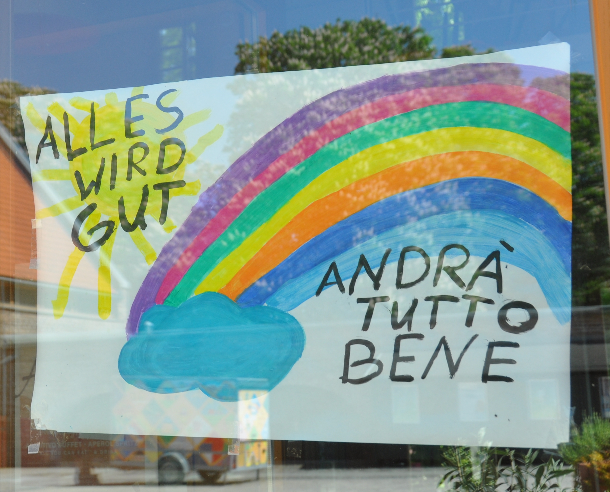

Introduzione
Agnese Vardanega
Università degli studi di Teramo (avardanega@unite.it)
Questo ciclo di seminari è stato organizzato all’inizio della pandemia, nell’ambito del corso in Sociologia e ricerca sociale applicata, che generalmente dedico alla sociologia del web.
L’idea era quella di accompagnare i ragazzi in un’auto-riflessione su questa esperienza epocale, che stava sconvolgendo la quotidianità di tutti. Già nel corso rivolto agli studenti del primo anno, tenuto nella prima parte del semestre, e interrotto nella sua modalità normale, in presenza, dalla chiusura delle scuole (5 marzo 2020), avevamo fatto un po’ di auto-etnografia (cfr. Jones 2007; Gariglio 2017). In molti ambiti della nostra vita, infatti, il lockdown ha reso visibile il “dato per scontato” dell’organizzazione sociale, facendo saltare quella “normalità” che lo rende invisibile.
Le questioni centrali della sociologia, che così spesso risultano astratte e lontane dall’esperienza, assumono così immediata concretezza e visibilità.
Come abbiamo risposto alla crisi? Cosa sta succedendo nelle nostre vite? Ma soprattutto: quali problemi ci si stanno ponendo? E quali risorse abbiamo — o non abbiamo — a disposizione per rispondervi?
Ho sentito il bisogno di riflettere su questi aspetti insieme a persone che si occupano professionalmente, a vario titolo, di innovazione, comunicazione e digitale. Tutti gli incontri sono stati preceduti da lunghe conversazioni interlocutorie sul tema da affrontare e su come affrontarlo.
Il focus, come si evince già dal titolo di questo volume, è rappresentato dalle nuove tecnologie nella vita di tutti i giorni, e sul ruolo che hanno avuto, e che stanno avendo, nel facilitare e nel cambiare le nostre vite e il nostro mondo.

Figura 1. «Andrà tutto bene» (Nicola, Wikimedia Commons, CC-by-sa 4.0)
{kind=link}
Andrà tutto bene?
Nei nostri incontri di aprile e di maggio, eravamo poco convinti che sarebbe andato tutto bene. Quello che era certo, è che tutti volevano tornare a prima. “Andrà tutto bene”, per i più significava, e significa ancora, tornare allo status quo ante.
Una pandemia è un “fatto sociale totale”, come è stato sottolineato da molti, citando Mauss (2016; ed. or. 1924).
un fatto sociale totale è un sistema/insieme di discorsi (retoriche, dibattiti, teorie, dichiarazioni, opinioni, slogan, ecc.) e di pratiche (azioni politiche, divieti, controlli, prescrizioni, comportamenti, precauzioni, limitazioni, ecc.) che permea ogni aspetto della vita e delle interazioni sociali (Matera 2020).
Non è possibile sottovalutare l’impatto psicologico e culturale, prima ancora che economico, del restare chiusi in casa, con contatti con l’esterno non solo ridotti al minimo, ma visti anche come potenzialmente pericolosi.
A ciò si aggiunga che il cambiamento è stato radicale ed improvviso nella vita di tutti, configurando dunque una situazione di crisi collettiva nel senso più pieno del termine.
uno stato più o meno permanente di disorganicità, di mancanza di uniformità e corrispondenza tra valori e modi di vita … In senso più concreto, ogni situazione, più o meno transitoria, di malessere e di disagio, che in determinati istituti, aspetti o manifestazioni della vita sociale, sia sintomo o conseguenza del maturarsi di profondi mutamenti organici o strutturali (Vocabolario Treccani, voce “Crisi”; Treccani s.d.).
Il termine crisi è apparentato con il termine criterio, dal momento che entrambi derivano dal verbo κρίνω (crino, giudico): una crisi rende problematico ciò che prima era dato per scontato, e necessario dunque discernere e prendere decisioni.
I meccanismi di negazione hanno avuto e continuano ad avere un ruolo importante nel mantenimento del senso. “Andrà tutto bene”, “Torneremo alla normalità”, sono modi per elaborare la crisi senza elaborare culturalmente il cambiamento.
Nella conversazione con Gianluigi Tiddia, ingegnere, esperto di turismo e di nuovi media, è molto presente la difficoltà da parte di tutti gli operatori del turismo — fino ad arrivare ai politici — a comprendere la portata di questa crisi (Capitolo 3). E oggi, mentre chiudo questo lavoro, a dicembre, il dibattito sulle vacanze di Natale e sulle settimane bianche replica quello di maggio-giugno sulle vacanze estive. Già questo, visto con il senno del poi, o forse senza il senno del poi, è di per sé un punto.
La comunicazione dei dati
Nell’organizzazione e nella gestione della risposta sanitaria e politica alla pandemia, un ruolo fondamentale — onnipervasivo — è stato svolto dai dati, e soprattutto dalla comunicazione dei dati, a partire dalle conferenze stampa della Protezione Civile, fino ai bollettini regionali e talora locali di contagi, decessi e guarigioni.
Se da una parte dati e grafici rendono asettica la tragica conta delle vittime, o distolgono l’attenzione da essa con colori accattivanti e modelli astrusi, dall’altra paura e polemiche sono intrinsecamente drammaturgiche: fanno ascolto, “incollano” alla pagina web o al programma televisivo (il problem frame; cfr. Altheide 1995 e 1997). In questa situazione, quindi, i meccanismi narrativi e le logiche mediatiche sono entrati più che mai in conflitto con la possibilità di una comunicazione d’emergenza efficace, secondo i criteri che Antonella Tollis, responsabile Ufficio informazione e social media della Regione Abruzzo, illustra nel suo intervento (§4.3).
Il capitolo 4 è dedicato ad analizzare i problemi incontrati dallo staff della Regione di fronte ad una comunicazione governativa basata su dati che ha imposto l’agenda ai media (lei la chiama dittatura computazionale), ed illustrare le strategie adottate per rispondere alle domande dei cittadini non meno che ai vari flames che i “numeri” producevano sui social. Da sottolineare come lo staff sia andato a cercare attivamente domande e dubbi dei cittadini, ed abbia usato i social per rispondere, dando vita ad una rubrica che ha avuto un buon seguito su YouTube, ed è stata ripresa spesso dalle testate giornalistiche regionali (§4.5). Il tutto, naturalmente, lavorando da remoto.
Anche il giornalismo italiano non sembra essersi dimostrato all’altezza della gestione di questo tipo di informazione basata sui dati. Alcune testate giornalistiche hanno cercato di fare un po’ di chiarezza sui dati messi a disposizione dalla protezione civile (si vedano ad esempio Sky TG24 2020; o lo stesso Borrelli intervistato da Repubblica, in Zunino 2020). Ma, se non ci fossero stati i volenterosi civic hackers di Ondata, i dati non avrebbero potuto essere oggetto di discussione pubblica del tutto, semplicemente perché per diversi giorni non sono stati diffusi in formato aperto (sulla vicenda, si vedano Saporiti 2020; Associazione Ondata 2020; e qui, Napolitano, §1.3.2.).
Pina Manente, giornalista e responsabile dell’Ufficio Stampa della Provincia di Teramo, nel capitolo 5, mette in evidenza il rapporto che c’è fra la crisi del giornalismo d’inchiesta e la difficoltà, in generale, a fare data journalism. Ma in Italia è anche difficile trovare i dati, e nelle redazioni mancano spesso le competenze statistiche e informatiche per elaborarli, analizzarli ed usarli per condurre inchieste.
Le polemiche non aiutano, ma è comunque preferibile che la discussione resti pubblica, e non venga depoliticizzata a favore delle dashboard. In questo, il giornalismo potrebbe e dovrebbe dare un contributo fondamentale. Che l’attenzione pubblica nei confronti dei dati vista in questa occasione sia considerata un bene o un male ai fini della gestione dell’emergenza, resta il fatto che quello nel campo del data journalism è uno dei ritardi culturali maggiormente balzati all’evidenza in questo periodo.
Ringraziamenti
Ringrazio in primo luogo gli amici, i colleghi gli studenti e tutti coloro che hanno partecipato ai seminari, per le riflessioni e le esperienze che hanno voluto condividere, e per le domande che hanno posto.
Agli autori va un ringraziamento speciale per la disponibilità a scrivere e a rendere liberamente disponibili i loro contributi, a rivederli e correggerli in prima persona, dando un apporto fondamentale anche alla realizzazione di questo prodotto, che, anche per questa ragione, viene pubblicato con licenza Creative Commons e distribuito gratuitamente in formato elettronico.
Ringrazio infine l’Università degli Studi di Teramo per avere ospitato i seminari; la dr.ssa Monia Alessandrini dell’Ufficio Comunicazione di Ateneo per l’organizzazione; e la dr.ssa Lucia Fiore, dell’Ufficio stampa e produzioni radiotelevisive, per la realizzazione della locandina, ripresa in copertina.
Cita come:
Vardanega A. (2020). Introduzione. In A. Vardanega (a c. di), Emergenza Covid-19. Nuove tecnologie e nuove forme di socialità. Teramo. 2020.
https://it.wikisource.org/wiki/Decameron/Giornata_prima/Introduzione.↩︎
«Dissolto e dissoluto risalgono alla stessa forma latina dissolutum, participio passato del verbo dissolvere, verbo composto sulla base di solvere … Accanto al significato generico di ‘sciogliere’ già il latino quindi prevedeva anche quelli di ‘slegare, sciogliere da vincoli’, derivanti dalla forma primaria luere (che con il prefisso se aveva dato seluere da cui solvere) dal quale aveva ereditato le accezioni di ‘liberarsi da regole, da leggi stabilite e fisse’ (da luere in italiano abbiamo anche lussare, lusso e lussuria). Il participio passato dissolutum, nella sua funzione aggettivale, indicava quindi anche ciò che è ‘libero da leggi’ e, accanto a questo significato coesisteva, come naturale conseguenza, quello di ‘impunito, licenzioso’» (Accademia della Crusca, https://accademiadellacrusca.it/it/consulenza/dissoluto-e-dissolto/727).↩︎
Lebaron (2020) parla di anomia anche per quanto riguarda le relazioni internazionali.↩︎
Questo desiderio di partecipare e produrre per il piacere di farlo richiama immediatamente — ovvero senza arrivare a Hannah Arendt o agli scritti giovanili di Marx — l’homo artifex di Sennett (2017), e tanto più se riferito alla dimensione civica e all’abitare i territori (Sennett 2018).↩︎